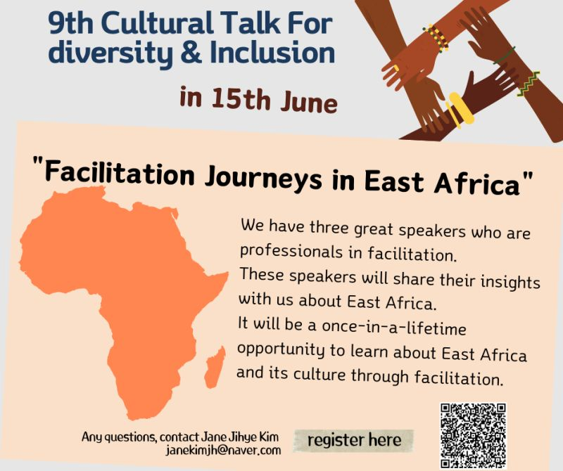
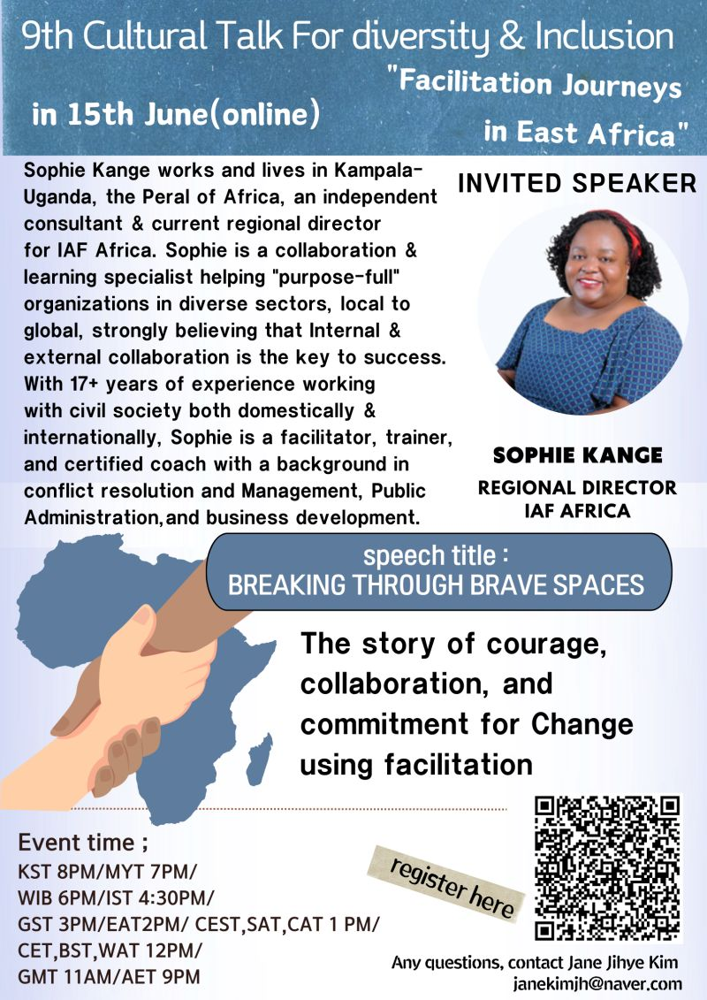
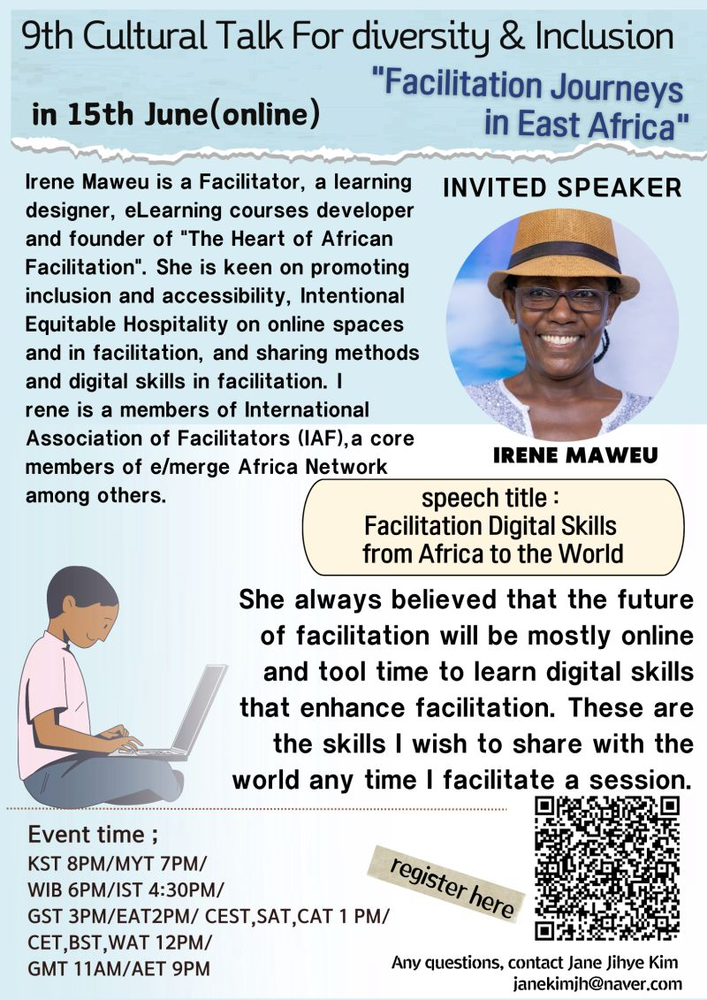
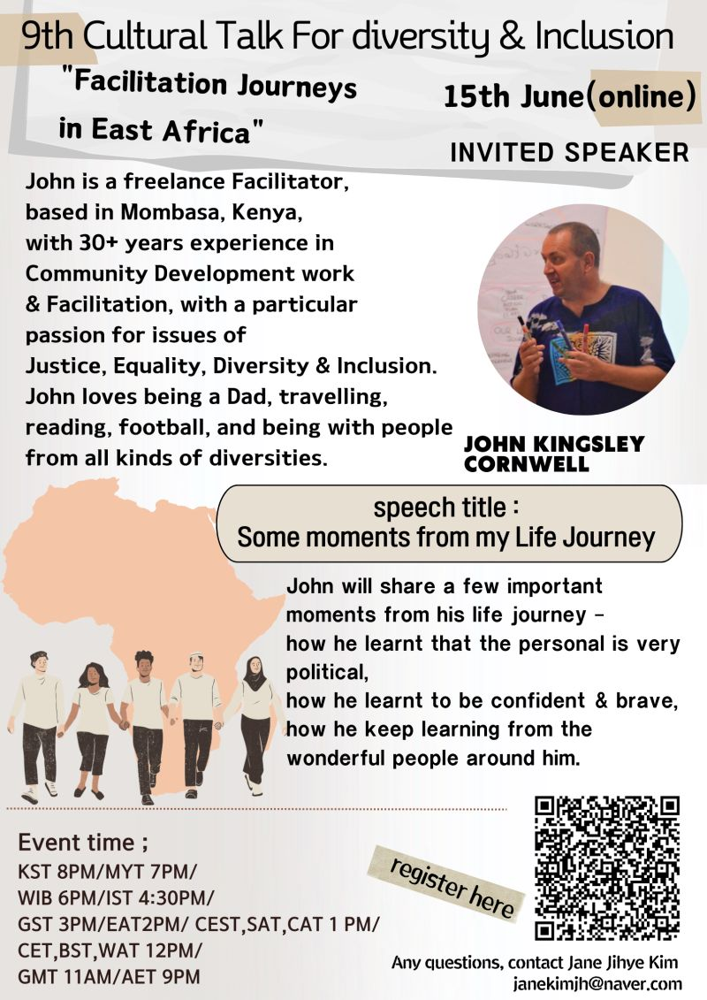

9th Cultural Talk For Diversity
Theme: Facilitation Journeys in East Africa

Event Details
Date: 15 June, 2024
Time: 20:00 (KST) / 19:00 (MYT) / 18:00 (WIB) / 16:30 (IST) / 15:00 (GST) / 14:00 (EAT) / 13:00 (CEST / SAT / CAT) / 12:00 (CET / BST / WAT) / 11:00 (GMT) / 21:00 (AET)
This event has already taken place and is now part of our archive.
Conference Overview
Centered on East Africa, this session explored facilitation not just as a method but as a human practice shaped by courage, collaboration, and lived experience. The speakers offered personal and professional reflections on building brave spaces, learning digital facilitation, and sustaining justice-oriented work in diverse communities.
Additional Event Posters


Sophie Kange
Regional Director, IAF Africa
Sophie Kange is an independent consultant based in Kampala, Uganda, and serves as Regional Director for IAF Africa. With more than 17 years of experience in civil society, she works as a facilitator, trainer, and certified coach focused on collaboration and learning.
Topic: Breaking Through Brave Spaces
Sophie shared a story of courage, collaboration, and commitment to change through facilitation. Her talk highlighted how facilitators can help organizations and communities move toward more purposeful and inclusive action.

Irene Maweu
Facilitator, learning designer, and founder of The Heart of African Facilitation
Irene Maweu is a facilitator, learning designer, and e-learning developer who promotes inclusion, accessibility, and equitable hospitality in online spaces. She is active in facilitation networks across Africa and has a strong interest in digital practice.
Topic: Facilitation Digital Skills from Africa to the World
Irene reflected on why the future of facilitation is deeply tied to digital capability. She shared how online tools and methods can strengthen access, participation, and the global exchange of African facilitation practice.

John Kingsley Cornwell
Freelance facilitator and community development practitioner
John Kingsley Cornwell is a freelance facilitator based in Mombasa, Kenya, with more than 30 years of experience in community development and facilitation. He is especially passionate about justice, equality, diversity, and inclusion.
Topic: Some Moments from My Life Journey
John used key moments from his own life to reflect on confidence, courage, and the political dimensions of personal experience. The talk invited participants to see facilitation as inseparable from listening, relationships, and continuous learning.
Related Coverage
You can explore additional posts and news coverage related to this conference below.